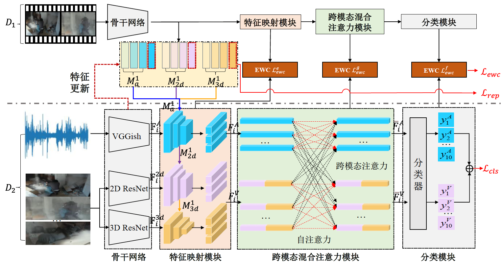

About Me
Yukun Zuo is a Post-Doctoral Research Fellow at the University of Michigan, working with Prof. Henry X. Liu. He received the Ph. D. degree in Information and Communication Engineering from the University of Science and Technology of China. His Ph. D. advisors are Prof. Changsheng Xu and A/Prof. Hantao Yao. He interned at the National Laboratory of Pattern Recognition, Institute of Automation, Chinese Academy of Sciences during 2019-2023. Here is my CV.
His research interests include traffic perception research, continual learning, and domain adaptation. He has a great passion in transportation research and representation learning.
Education
-
Sept. 2018 – Jun. 2023
Ph.D.
School of Information Science and Technology, major in Information and Communication Engineering
University of Science and Technology of China
Supervisor: Prof. Changsheng Xu and A/Prof. Hantao Yao -
Sept. 2014 – Jun. 2018
B.E.
School of the Gifted Young (SCGY), major in Information Security
University of Science and Technology of China
Work Experience
-
Sept. 2023 – present
Post-Doctoral Research Fellow
Michigan Traffic Lab, University of Michigan
Mentor: Prof. Henry Liu -
Jul. 2019 – Jun. 2023
Research Intern
Multimedia Computing Group, Institute of Automation, Chinese Academy of Sciences
Mentor: Prof. Changsheng Xu -
Dec. 2017 – Jul. 2018
Research Intern
Multimedia Computing Group, Institute of Automation, Chinese Academy of Sciences
Mentor: Prof. Changsheng Xu
Publications
-
Hierarchical Prompt for Rehearsal-free Continual Learning
Yukun Zuo, Hantao Yao, Liansheng Zhuang, Changsheng Xu
In Submission to IEEE Transactions on Pattern Analysis and Machine Intelligence (TPAMI), 2024
-
Generalized Domain Adaptation with Extremely Limited Labels
Yukun Zuo, Hantao Yao, Liansheng Zhuang, Changsheng Xu
In Submission to IEEE Transactions on Circuits and Systems for Video Technology (TCSVT), 2024
-
Hierarchical Augmentation and Distillation for Class Incremental Audio-Visual Video Recognition
Yukun Zuo, Hantao Yao, Liansheng Zhuang, Changsheng Xu
IEEE Transactions on Pattern Analysis and Machine Intelligence (TPAMI), 2024
-

Incremental Audio-Visual Fusion for Person Recognition in Earthquake Scene
Sisi You, Yukun Zuo, Hantao Yao, Changsheng Xu
ACM Transactions on Multimedia Computing, Communications and Applications (TOMM), 2023
-
Dual Structural Knowledge Interaction for Domain Adaptation
Yukun Zuo, Hantao Yao, Liansheng Zhuang, Changsheng Xu
IEEE Transactions on Multimedia (TMM), 2023
-
Seek Common Ground While Reserving Differences: A Model-Agnostic Module for Noisy Domain Adaptation
Yukun Zuo, Hantao Yao, Liansheng Zhuang, Changsheng Xu
IEEE Transactions on Multimedia (TMM), 2022
-
Margin-based Adversarial Joint Alignment Domain Adaptation
Yukun Zuo, Hantao Yao, Liansheng Zhuang, Changsheng Xu
IEEE Transactions on Circuits and Systems for Video Technology (TCSVT), 2022
-
Attention-Based Multi-Source Domain Adaptation
Yukun Zuo, Hantao Yao, Changsheng Xu
IEEE Transactions on Image Processing (TIP), 2021
-
Category-Level Adversarial Self-Ensembling for Domain Adaptation
Yukun Zuo, Hantao Yao, Changsheng Xu
IEEE International Conference on Multimedia & Expo (ICME), 2020
-
Representation Learning of Knowledge Graphs with Entity Attributes and Multimedia Descriptions
Yukun Zuo, Quan Fang, Shengsheng Qian, Xiaorui Zhang, Changsheng Xu
IEEE International Conference on Multimedia Big Data (BigMM), 2018
Awards
- Outstanding doctoral graduates, USTC 2023
- Shenzhen Stock Exchange Scholarship, USTC 2022
- National Encouragement Scholarship, USTC 2016
- Excellent Student Scholarship, USTC 2014, 2016
Skills
Software Programming: Python, Matlab, C/C++
Deep Learning Platforms: PyTorch, TensorFlow